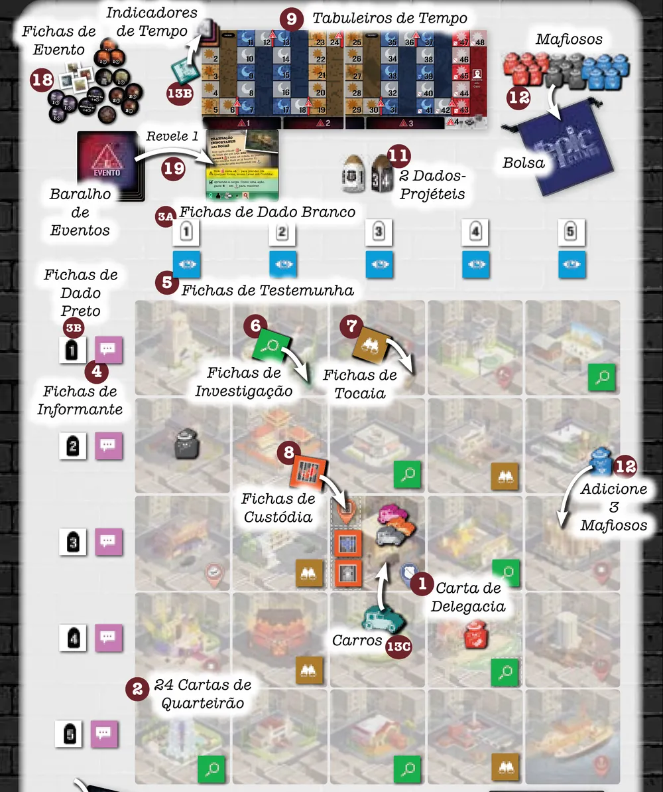
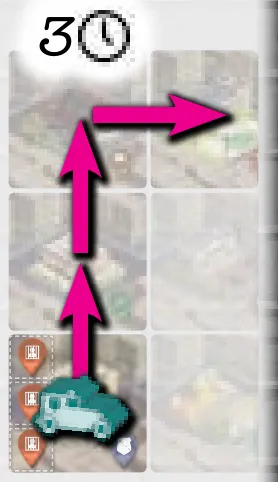
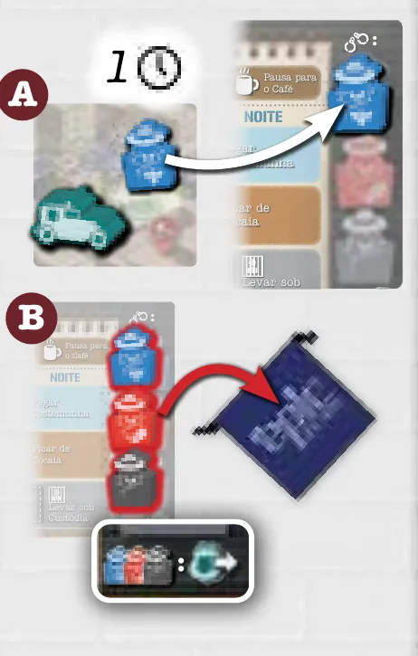
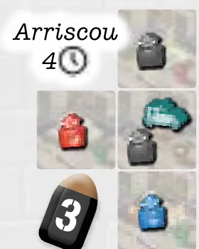
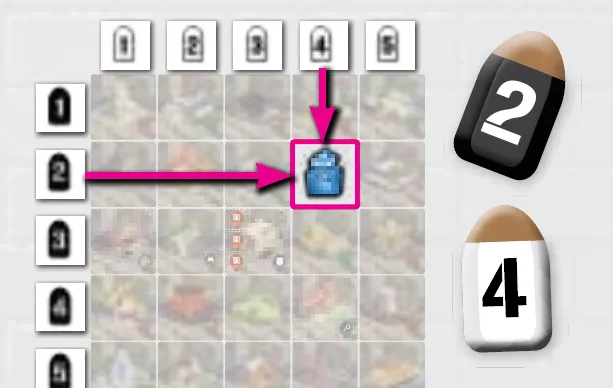
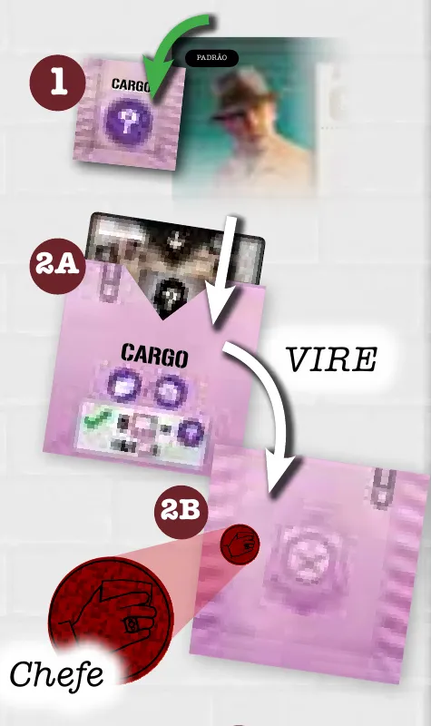
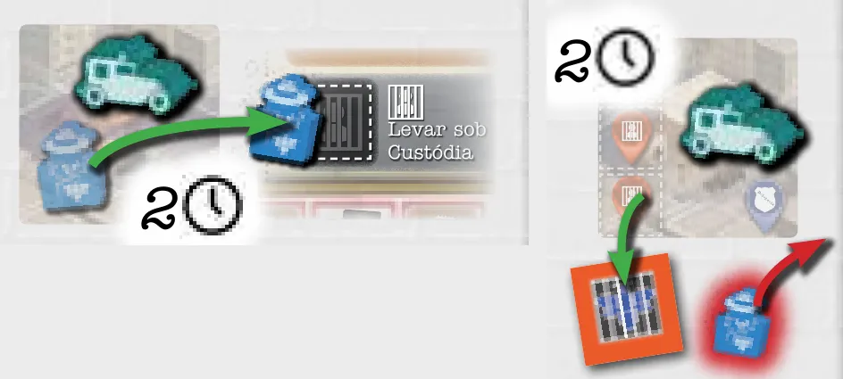

Para quem nunca jogou1 a 4 jogadores30 a 60 min14+Edição Asmodee
· Redação Elite Boardgamers
Resumo em 1 minuto
Você gasta horas dirigindo pela cidade, prendendo mafiosos e juntando pistas e álibis, e vence quem acusar o assassino certo com a patente mais alta.
Joga sempre quem gastou menos horas na Trilha de Tempo, e algumas ações só valem de dia, outras só de noite.
As Fichas de Pista de todos os jogadores decifram juntas os cinco traços do assassino, mas só quem pega a última vê o resultado.
No fim, cada um faz uma única acusação secreta; entre quem acertou, vence o Nível de Distintivo mais alto.
Como você aprende: 4 etapas, da mesa montada à contagem de pontosLeitura do essencial: cerca de 10 min
À vista, só o essencial para jogar. O que abre com + é explicação, exemplo, exercício ou regra de caso especial: abra quando precisar.
Comece a jogar em 4 minutos
Meta: em 4 minutos de leitura, montar a cidade e jogar o seu primeiro turno sem abrir o manual.
A ideia do jogo
Um assassino está escondido num envelope, e cada jogador é um agente atrás dele. Você dirige pela cidade prendendo mafiosos e juntando Fichas de Pista, que revelam traços do assassino, e coleciona Cartas de Suspeito, os inocentes que pode riscar da lista. Tudo gasta horas na Trilha de Tempo; quando o tempo de todos acaba, cada um faz uma única acusação.
Monte a mesa
Na ordem. O marcado (depois) se monta já e se usa mais tarde p. 5 e 6.
A Carta de Delegacia no centro e as 24 Cartas de Quarteirão em volta, ao acaso, num quadrado de 5 por 5: a cidade.
Fichas de Dado brancas no alto, uma por coluna, e pretas à esquerda, uma por linha, de 1 a 5. Uma Ficha de Testemunha ao lado de cada branca; uma de Informante ao lado de cada preta.
Fichas de Investigação e de Tocaia viradas para baixo nos quarteirões marcados; as de Custódia na Delegacia (depois).
Os 2 Tabuleiros de Tempo lado a lado, lado Padrão para cima: a Trilha de Tempo.
Mafiosos na Bolsa. Tire 3 e role os dados para cada um (Rolagem de Mafioso, abaixo); 6, 3 e 3 ou quarteirão ocupado: role de novo.
Cada jogador: Tabuleiro de Agente (lado Padrão), Ajuda ao Jogador, Carro na Delegacia, Distintivo no desenho grande do tabuleiro, 1 Carta de Habilidade (de 2 recebidas) e 1 de Corporação (depois).
Indicadores de Tempo empilhados ao lado da trilha: o do mais velho embaixo, o do mais novo no topo.
Uma Carta de Suspeito, sem ninguém ver, no Envelope de Assassino. As outras formam o baralho.
Uma Carta de Evento virada no espaço "1" abaixo da trilha, preparada como ela manda (depois).
Seu primeiro turno
Joga o Indicador de Tempo mais atrás; empatados, o do topo. No começo, o do mais novo p. 5 e 8. O turno p. 8, 11, 15 e 16:
Dirigir (opcional): mova o Carro quantos quarteirões quiser, sem diagonal; 1 hora cada.
Realizar 1 Ação (obrigatória). Avance o indicador as horas da ação mais as da direção; sobre outro indicador, o seu fica por cima.
Comprar um Evento: só se você for o primeiro a cruzar uma linha vermelha da trilha (etapa 4).
Rolagem de Mafioso: role os dois dados; o branco dá a coluna, o preto a linha. Quarteirão vazio: ponha lá um mafioso da Bolsa. Ocupado: compre um Evento. Um 6, ou 3 e 3: nada. Dois números iguais (1, 2, 4 ou 5): aplique o resultado e role de novo.
Ações do primeiro turno, tratado aqui como diurno (etapa 2) p. 11 e 12:
Ação
Custo
Requisito
Prender
1 hora
Mafioso no seu quarteirão
Pegar Informante
2 horas
Mafioso no seu quarteirão; Informante na sua linha
Investigar Cena
2 horas
Ficha de Investigação no seu quarteirão
Chamar Reforços
Arrisque de 1 a 6 horas
Mafiosos no seu quarteirão ou nos vizinhos
Pausa para o Café
1 hora
Nenhum
Ainda não precisa saber
Ações noturnas e evidências: etapa 3. Eventos e Cartas de Corporação: etapa 4.
Como a partida acaba
Com o indicador nas horas 43 a 48, você pode encerrar o seu caso. Com todos encerrados, cada um põe o Carro, em segredo, sobre o suspeito que acusa. Entre quem acertou, vence o Distintivo mais alto; se ninguém acertar, todos perdem p. 14 e 17.
Prefere ver? Uma partida em vídeo. Ele complementa este guia; em caso de diferença, vale o manual.
TINY EPIC CRIMES - Gameplay resumida, canal Duque Board Games · abrir no YouTube
0Antes de tudo: o que é este jogoOpcional
Abrir esta seção
Em Echo Ridge, o produtor de cinema Donny Mureti foi assassinado, e os agentes da lei têm 48 horas para achar o culpado p. 2. No Modo Padrão, cada um joga por si: vence quem acusar o assassino certo e tiver a patente mais alta; se ninguém acertar, todos perdem p. 4.
O assassino é uma das 16 Cartas de Suspeito. Há dois caminhos até ele, e o jogo pede os dois p. 8 e 9:
Riscar inocentes. As outras Cartas de Suspeito têm álibi: cada uma que você vê sai da lista.
Decifrar evidências. O assassino tem cinco traços, cada um com duas possibilidades, revelados quando os jogadores, somados, juntam fichas suficientes de um tipo.
Só quem pega a última ficha vê o traço; quem ajudou ganha uma Carta de Suspeito. Todos colaboram para decifrar, mas cada um guarda o que sabe p. 4, 9 e 10.
1Como este guia ensinaOpcional
Abrir esta seção
São quatro etapas, cada uma uma parte real da partida, com Para entender (como funciona e por quê), Passo a passo (as regras de sempre), regras adicionais para casos menos frequentes e tarefas com ajuda decrescente: exemplo resolvido, tarefa para completar e sua vez. Escolha uma opção em cada pergunta para ver a certa e a explicação. No fim, uma avaliação diz o que reler, e a folha de consulta vai para a mesa.
2Etapa 1: montar a cidade
Por que funciona assim

A cidade montada, com a Trilha de Tempo e o primeiro Evento no alto, as fichas nas bordas e nos quarteirões, os carros na Delegacia e os 3 primeiros mafiosos. Ilustração: manual Asmodee p. 7Regra adicional: AnotaçõesPratique esta etapa: exercícios com respostas
3Etapa 2: o tempo, o turno e os mafiosos
Por que funciona assimSobre a edição

Dirigir: 3 quarteirões sem diagonal, por 3 horas. Ilustração: manual Asmodee p. 11

Prender: por 1 hora, o mafioso azul vai para o espaço azul do tabuleiro (A); com as três cores, +1 Nível de Distintivo e os três voltam para a Bolsa (B). Ilustração: manual Asmodee p. 11

Chamar Reforços: arriscou 4, rolou 3; os 4 mafiosos saem da cidade. Ilustração: manual Asmodee p. 12

Rolagem de Mafioso: preto 2 e branco 4 levam o mafioso para a linha 2, coluna 4. Ilustração: manual Asmodee p. 16Regra adicional: AtenuaçãoRegra adicional: Onda de CrimesRegra adicional: Um mafioso por quarteirãoRegra adicional: O limite de 48 horasVer um exemplo resolvidoPratique esta etapa: exercícios com respostas
4Etapa 3: pistas, evidências e suspeitos
Por que funciona assim

Decifrar o Cargo: a Ficha de Evidência vai para o tabuleiro (1), e o Envelope de Evidência, virado, mostra o símbolo, aqui o de Chefe (2A e 2B). Ilustração: manual Asmodee p. 9Regra adicional: Investigação e Tocaia se esgotamRegra adicional: Levar sob Custódia, regras finas

Levar sob Custódia: 2 horas para o Espaço de Custódia; depois, na Delegacia, mais 2 pela Ficha de Custódia azul. Ilustração: manual Asmodee p. 13Regra adicional: InterrogarRegra adicional: Consultar uma Evidência DecifradaVer um exemplo resolvidoPratique esta etapa: exercícios com respostas
5Etapa 4: Eventos, Cartas de Corporação e a acusação
Por que funciona assimRegra adicional: Habilidade e CorporaçãoRegra adicional: Penalidade por Excesso de EventosRegra adicional: Evento CronometradoRegra adicional: Rolagens na preparação de EventoRegra adicional: Recompensas LimitadasVer um exemplo resolvidoPratique esta etapa: exercícios com respostas
6Situações especiaisOpcional
Abrir esta seção
Partida de 2 jogadores. Use 3 Fichas de Informante, ao lado das Fichas de Dado pretas 1, 3 e 5, e 3 Fichas de Testemunha, ao lado das brancas 2, 3 e 4; bastam 3 para decifrar o Cargo e 3 para a Gangue. As fichas que sobram voltam para a caixa. Vale para os Modos Padrão e Cooperativo. No Modo Padrão, separe também 4 Cartas de Suspeito viradas para baixo, sob um Carro não usado: os álibis de um "agente fantasma". Ao Interrogar, você pode embaralhá-las e comprar uma em vez de pegar do outro jogador, devolvendo-a depois p. 17.
Regra adicional: Modo CooperativoRegra adicional: Modo SoloSobre a edição: Pontos em que o manual deixa dúvida
7Avaliação finalOpcional
Abrir esta seção
Responda sem consultar. Cada resposta diz o que reler.
1. Três indicadores estão no espaço 12. Quem joga?
Quem chega a um espaço ocupado fica por cima, e joga o do topo p. 11 e 16. Releia a etapa 2.
2. É noite. Qual ação você pode fazer?
Noturnas: Pegar Testemunha, Ficar de Tocaia e Levar sob Custódia p. 15. Releia a etapa 2.
3. Você pegou a quinta e última Ficha de Informante. O que só você faz?
Só quem coleta a última vê, em segredo; todos com Ficha de Informante ganham 1 Carta de Suspeito p. 9 e 10. Releia a etapa 3.
4. Seu mafioso está no Espaço de Custódia, e o próximo turno começa de dia. Pode concluir na Delegacia?
As duas partes são noturnas p. 13. Releia a etapa 3.
5. Há 3 Eventos ativos e um quarto deveria entrar. O que acontece?
Penalidade por Excesso de Eventos p. 16. Releia a etapa 4.
6. Ana acerta a acusação com Distintivo 5; Bruno erra com 8. Quem vence?
O desempate só vale entre quem acertou p. 17. Releia a etapa 4.
8Para consultar durante a partida
Seu turno (joga o indicador mais atrás; empatados, o do topo)
Dirigir (opcional): 1 hora por quarteirão, sem diagonal.
Realizar 1 Ação. Avance: direção + ação. Nunca além do 48.
Comprar um Evento: se for o primeiro a cruzar uma linha vermelha.
Rolagem de Mafioso: branco = coluna, preto = linha. Vazio: mafioso. Ocupado: Evento. 6 ou 3 e 3: nada. Iguais (1, 2, 4, 5): rola de novo.
Ação
Quando
Horas
Efeito
Prender
Sempre
1
Mafioso no tabuleiro, um por cor; 3 cores: +1 Distintivo
Pausa para o Café
Sempre
1
Nada
Chamar Reforços
Dia
1 a 6, arriscadas
Dado igual ou menor: detém o seu quarteirão e os vizinhos, +1 Corporação
Pegar Informante
Dia
2
Mafioso + Informante da linha, +1 Distintivo
Investigar Cena
Dia
2
Vira a ficha, +1 Distintivo
Pegar Testemunha
Noite
2
Mafioso + Testemunha da coluna, +1 Distintivo
Ficar de Tocaia
Noite
1 a 5, arriscadas
Ficha igual ou menor: sucesso, +1 Distintivo
Levar sob Custódia
Noite
2 + 2
Custódia; depois, na Delegacia, Ficha de Custódia, +1 Distintivo
Evidências: Testemunha, Gangue (5); Informante, Cargo (5); Investigação, Perícia (3 sucessos); Tocaia, Fuga (3); Custódia, Arma (3). Com 2 jogadores, Gangue e Cargo com 3. Quem pega a última vê; quem tem ficha do tipo ganha 1 Carta de Suspeito.
Eventos: até 3. O quarto: descarte o suspeito do topo, sem ver; sem baralho, todos avançam 1 hora. Corporação: no máximo 2.
Fim: nas horas 43 a 48, deite o Carro. Acusação secreta e simultânea. Desempate entre quem acertou: Distintivo, menos horas, mais Fichas de Evidência, vitória dividida.
9Fontes
Asmodee. Tiny Epic Crimes: livro de regras (edição brasileira, v1.0, 20 páginas, PDF de 07/11/2023; tradução de Fernanda Rocha). Biblioteca de downloads da Asmodee Brasil, https://www.asmodee.com.br/download-library. Consultado em 01/11/2026.
Não foram consultados FAQ, errata ou o manual original em inglês.
Regras conferidas no livro de regras da edição brasileira de Tiny Epic Crimes (Asmodee, versão v1.0, 2023, tradução de Fernanda Rocha), baixado da biblioteca de downloads da Asmodee Brasil. O guia ensina o Modo Padrão, o competitivo; os modos Cooperativo e Solo estão nas Situações especiais.